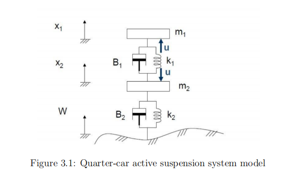
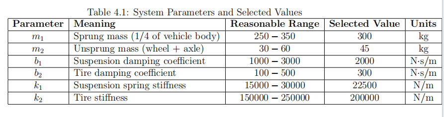
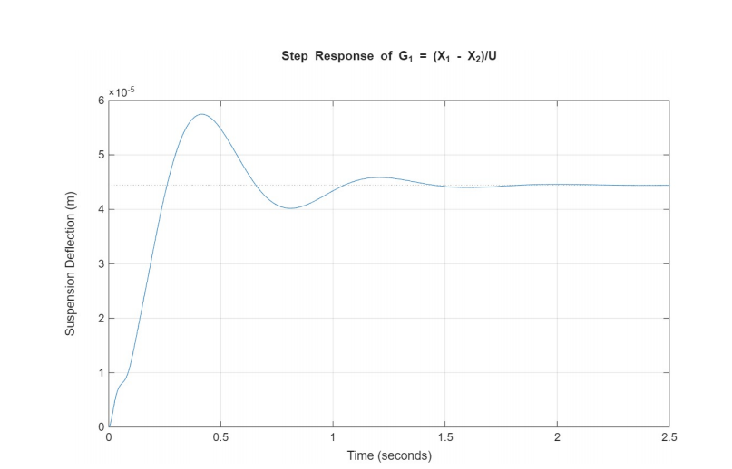
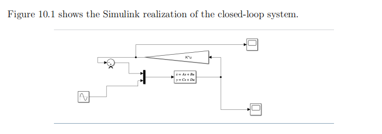
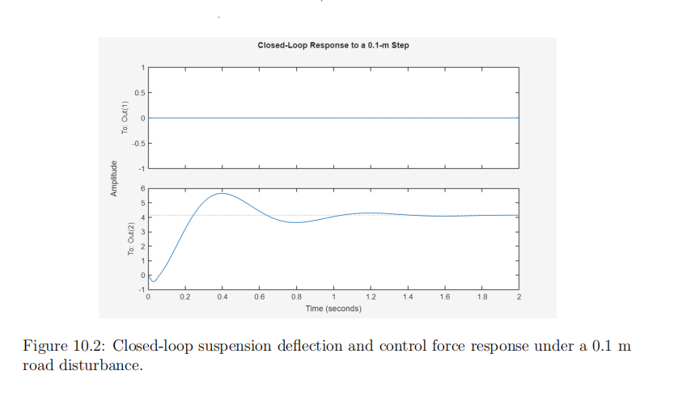
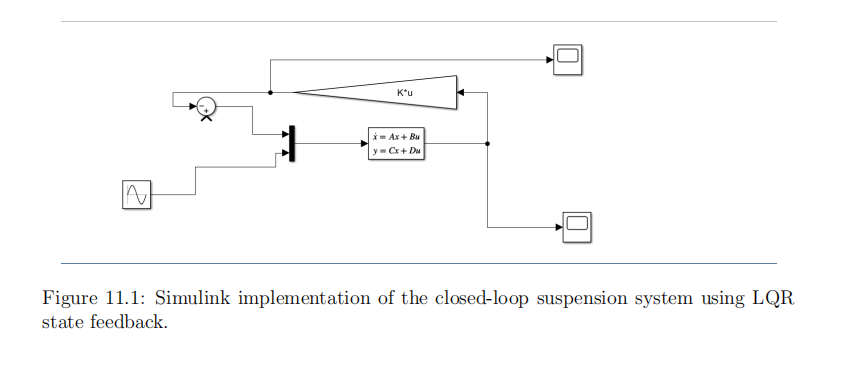
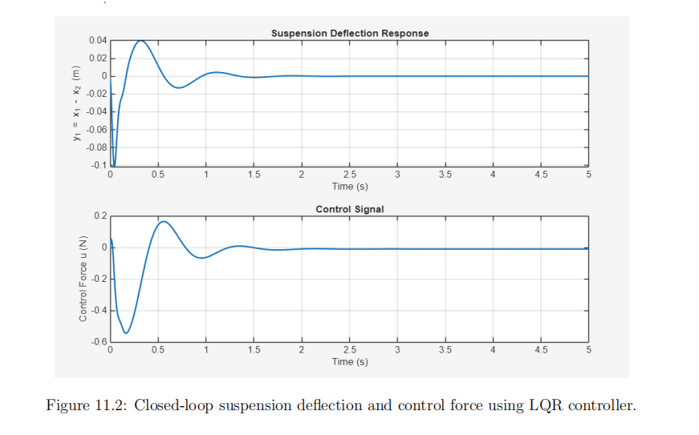

The physical suspension model
The system represents the sprung mass (vehicle body) and unsprung mass (wheel/axle), connected by the suspension spring and damper. A road displacement w disturbs the system, while a control force u acts between the masses.
The main output analyzed in the report is y = x₁ − x₂, the suspension deflection. The work proceeds from equations of motion to open-loop responses, pole placement, and LQR simulations.

Selected system parameters
The report provides the following baseline parameters for its modeled quarter-car plant.

Baseline: sprung mass 300 kg, unsprung mass 45 kg, suspension damping 2,000 N·s/m, tire damping 300 N·s/m, suspension stiffness 22,500 N/m and tire stiffness 200,000 N/m.
Open-loop response
The first MATLAB plot shows the suspension deflection response of G₁ = (X₁ − X₂)/U under a step in the actuator-force input. The displacement rises, overshoots, oscillates, and approaches a steady level at roughly 4.4 × 10⁻⁵ m on the shown axis. This is an open-loop actuator test, not a road-disturbance test.

Controller implementation and comparison
Pole-placement model
The Simulink diagram feeds back the estimated state vector through a gain K to the state-space plant. The report describes computing state-feedback gains using Ackermann-based pole placement.

Pole-placement response
The supplied Figure 10.2 is labeled as a 0.1 m road-disturbance response. Its lower plot shows a transient peak and damped oscillations tending toward an approximately constant level, rather than visibly returning to zero.
Interpretation caution: the upper trace is flat at zero despite being associated with a control signal; therefore the screenshot alone does not establish nonzero actuator effort or full compliance with the control objective.

LQR Simulink model
The second controller applies full-state feedback using the LQR gain, selected to balance suspension-deflection performance against control effort through weighting matrices Q and R.

LQR response
The reported LQR result shows suspension deflection recovering toward zero after the disturbance, with damped oscillations over roughly the first 1–2 seconds. The corresponding control-force trace also decays toward zero. On the plotted axis, the initial deflection is approximately −0.10 m.
These observations describe the supplied graph and are not independent simulation verification.

Download project materials
The code-only package contains the three original MATLAB scripts and the Simulink model. The complete report is provided separately and includes the derivations, figures, discussion, and appendices.